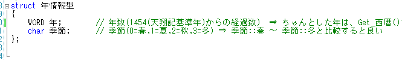
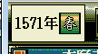
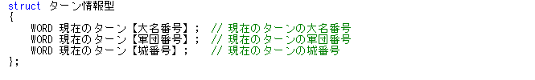
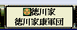
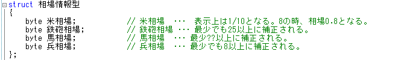
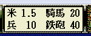
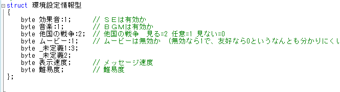
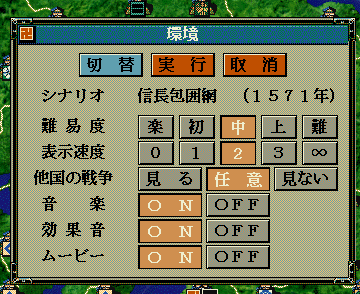
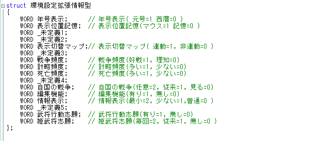
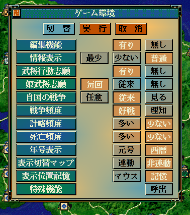

| 年情報型.h | 年情報型 | p年情報 | 今何年・季節は？ など |   |
| ターン情報型.h | ターン情報型 | pターン情報 | メイン画面中で現在ターンが回ってる大名は？ 軍団は？ 城は？ など。 |   |
| 相場情報型.h | 相場情報型 | p相場情報 | 現在の米・鉄砲・兵士・馬の相場は？ など。 |   |
| 環境情報型.h | 環境設定情報型 | p環境設定情報 | 機能->環境で出てくる基本的な環境設定の各種値。 |   |
| 環境情報型.h | 環境設定拡張情報型 | p環境設定拡張情報 | 上述の「切替」で出てくる拡張環境設定の各種値。 |   |